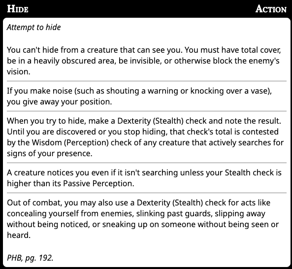

MCDs DnD House Rules
- A levelled spell gained through a class may only be cast with armor or shield equipped if that class provides the proficiency for that armor or shield.
- Taking the Heavy Armoured or Moderately Armoured feat can counteract this
- When you use the attack action to make an attack using a weapon or unarmed strike, you can choose to take a -5 penalty to that attack roll. If the attack hits, you add +10 to the damage roll with a heavy weapon (d12, 2d6, d10) and +5 for a one handed (d8) weapon and +4 for a (d6) finesse like weapon.
- Cantrips and bonus action deliberately excluded
- Only for PCs
- You can switch from a one handed weapon to another using your bonus action.
- This makes switching weapons less action intensive than in RAW
- In RAW you can stow or draw with your free action, but it then requires a use of your action to draw/stow a different weapon
- I will use the special attacks from BG3 (e.g. Hamstring shot, Backbreaker, Brace)
- Flanking is now a +2 bonus to hit when you outnumber the enemy at least 2-to-1 and a +5 for 3-to-1
- All other conditions that would grant Advantage (e.g. paralyzed) are staying the same. Only flanking is being changed to a flat bonus rather than an extra dice roll.
- A creature/PC can't flank when Hidden
- Stealth rules. This is all RAW, just distilled into one place, with some inferences being made.
- TL;DR: You must use the Hide action in order to engage in Stealth. The hide action is determined by these rules (from p177 and p192 of the PHB) 
- Once you are hidden your location is not known. This is true even in combat.
- If your location is not know you have advantage.
- Attacking, excessive noise and other various common sense things that are at the DMs discretion end hiding.
- I really don't want characters to have to worry about managing inventory
- Will give a bag of holding and will loosely use Variant Encumbrance
- You can Thunderstep with characters up to size medium, regardless of your characters size.
- Potion actions
- I reaffirm the RAW that drinking a potion or feeding it to someone is an action
- Just like the rule above though, RAW drawing a potion from your inventory uses a free action
- It will also be an action to search for a potion on a character
- Mental ability score checks (INT, WIS, CHA) do not require an action in combat. They can only be taken on your turn and not as a reaction.
- e.g. You see someone cast a spell and want to identify what it might be. You can make an Arcana check, and then make an attack as normal
- You want to taunt your enemy. Make a Charisma check to chat shit and then cast a spell as normal.
- The DCs of these checks may be high however given the heat of battle.
- An exception to this are the Search (WIS) and Investigation (INT) actions.
- TCOE is banned
- Cantrip Formulas, Martial Versatility, Eldritch Versatility etc is allowed
- I will use the BG3 Path of the Bezerker
- Milestone levelling
- Levelling will be tied to narrative objectives.
Rationale
For 1: Casters are the most "powerful" classes in the game. When you multiclass then they also become the most armoured in the game. This is kind of broken.
For 2-4: Martial characters need more scope and more choice.
Changelog
Removing the Shield spell ban: Taking both the shield spell and armour away from casters would render them too weak. It's also thematically appropriate that sorc/wizards can cast spells to defend themselves.
Keeping the levelled spell casting when wearing armour: this still allows multiclassing whilst taking shield and armour out of the hands of wizards etc.